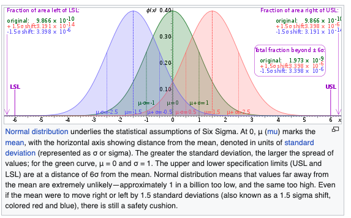
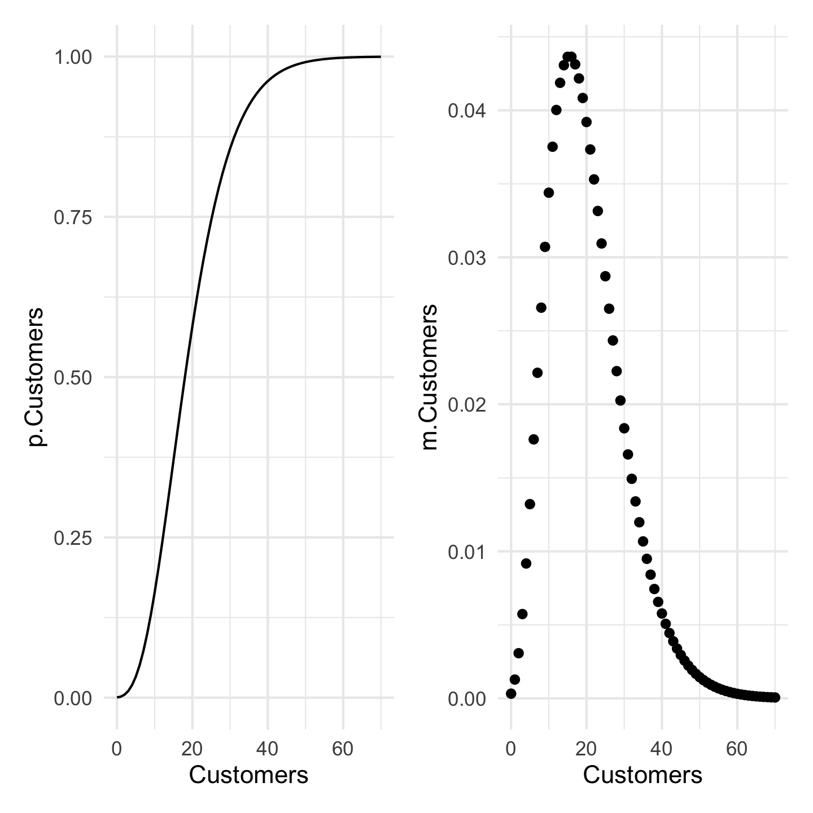
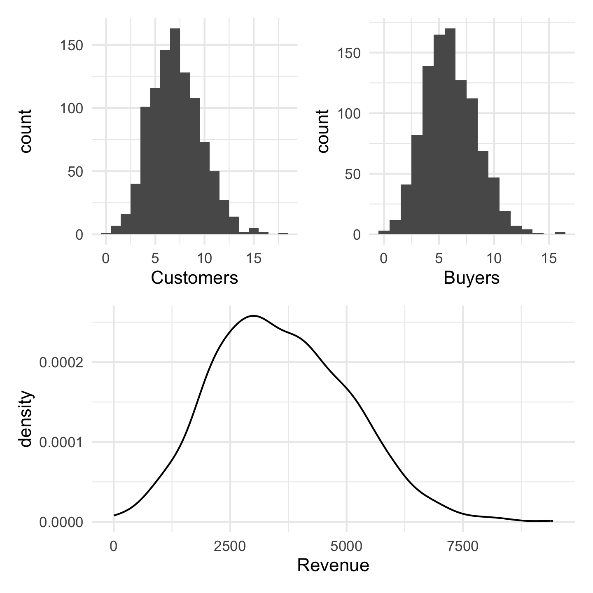

Discrete Distributions
Linking Probability and Data
Discrete Distributions
Probability Distributions of Two Forms
Our core concept is a probability distribution just as above. These come in two forms for two types [discrete (qualitative)] and continuous (quantitative)] and can be either:
- Assumed, or
- Derived
The Poster and Examples
Distributions are nouns.
Sentences are incomplete without verbs – parameters.
We need both; it is for this reason that the former slide is true.
We do not always have a grounding for either the name or the parameter.
For now, we will work with univariate distributions though multivariate distributions do exist.
Functions
Probability distributions are mathematical formulae expressing likelihood for some set of qualities or quantities.
- They have names: nouns.
- They also have verbs: parameters.
Like a proper English sentence, both are required.
Models
What is a model?
For our purposes, it is a systematic description of a phenomenon that shares important and essential features of that phenomenon. Models frequently give us leverage on problems in the absence of alternative approaches.
One Review Problem: Six Sigma
6\sigma is a widely used tool in TQM [total quality management]. But 6\sigma isn’t actually 6\sigma. The famous mantra that goes with it is 3.4 dipmo [defects per million opportunities]. This means that the outer limit [and it only considers one-sided/tailed] on defects is 0.0000034.
Radiant on the problem.
Code
Probability calculator
Distribution: Normal
Mean : 0
St. dev : 1
Lower bound : 0.0000034
Upper bound : 1
P(X < -4.5) = 0.0000034
P(X > -4.5) = 16\sigma is only 4.5.

Today’s Models
- The Poisson will be defined an arrival rate \lambda – lambda.
- Bernoulli trials: Two outcomes occur with probability \pi and 1-\pi.
- The binomial distribution will be defined by a number of trials n and a probability \pi.
- The geometric distribution defines the first success of n trials with probability \pi.
- The negative binomial distribution defines the probability of k successes in n trials with probability \pi. It is related to the Poisson.
- The binomial distribution will be defined by a number of trials n and a probability \pi.
Events: The Poisson

Poisson
Take a binomial with p very small and let n \rightarrow \infty. We get the Poisson distribution (y) given an arrival rate \lambda specified in events per period.
f(y|\lambda) = \frac{\lambda^{y}e^{-\lambda}}{y!}
Examples: The Poisson
- Walk in customers
- Emergency Room Arrivals
- Births, deaths, marriages
- Prussian Cavalry Deaths by Horse Kick
- Fish?
Air Traffic Controllers
FAA Decision: Expend or do not expend scarce resources investigating claimed staffing shortages at the Cleveland Air Route Traffic Control Center.
Essential facts: The Cleveland ARTCC is the US’s busiest in routing cross-country air traffic. In mid-August of 1998, it was reported that the first week of August experienced 3 errors in a one week period; an error occurs when flights come within five miles of one another by horizontal distance or 2000 feet by vertical distance. The Controller’s union claims a staffing shortage though other factors could be responsible. 21 errors per year (21/52 [0.4038462] errors per week) has been the norm in Cleveland for over a decade.
Some Questions
- Plot a histogram of 1000 random weeks. NB: pois is the noun with no default for \lambda – the arrival rate.
Another Look
Decision
- What would you do and why? Not impossible. The probability of this number or greater is 0.0081342
A Wrinkle
- After analyzing the initial data, you discover that the first two weeks of August have experienced 6 errors. What would you now decide?
Deaths by Horse Kick in the Prussian cavalry?
Bernoulli Trials
The Generic Bernoulli Trial
Suppose the variable of interest is discrete and takes only two values: yes and no. For example, is a customer satisfied with the outcomes of a given service visit?
For each individual, because the probability of yes (1) \pi and no (0) 1-\pi must sum to one, we can write:
f(x|\pi) = \pi^{x}(1-\pi)^{1-x}
Binomial Distribution
For multiple identical trials, we have the Binomial:
f(x|n,\pi) = {n \choose k} \pi^{x}(1-\pi)^{n-x} where {n \choose k} = \frac{n!}{(n-k)!}
The Binomial

BinomialR
Scottish Pounds
Informal surveys suggest that 15% of Essex shopkeepers will not accept Scottish pounds. There are approximately 200 shops in the general High Street square.
- Draw a plot of the distribution and the cumulative distribution of shopkeepers that do not accept Scottish pounds.
A Nicer Plot
More Questions About Scottish Pounds
- What is the probability that 24 or fewer will not accept Scottish pounds?
- What is the probability that 25 or more shopkeepers will not accept Scottish pounds?
Even More Scottish Pounds
- With probability 0.9 [90 percent], XXX or fewer shopkeepers will not accept Scottish pounds.
The Median is a Binomial with p=0.5
Interestingly, any given observation has a 50-50 chance of being over or under the median. Suppose that I have five datum.
- What is the probability that all are under?
- What is the probability that all are over?
- What is the probability that the median is somewhere in between our smallest and largest sampled values?
Everything else.
1 - 0.03125 - 0.03125 = 0.9375
The Rule of Five
- This is called the Rule of Five by Hubbard in his How to Measure Anything.
Geometric Distributions
How many failures before the first success? Now defined exclusively by p. In each case, (1-p) happens k times. Then, on the k+1^{th} try, p. Note 0 failures can happen…
Pr(y=k) = (1-p)^{k}p
Example: Entrepreneurs
Example: Entrepreneurs
[Geometric] Plot 1000 random draws of “How many vendors until one refuses my Scottish pounds?”
Negative Binomial Distributions
How many failures before the r^{th} success? In each case, (1-p) happens k times. Then, on the k+1^{th} try, we get our r^{th} p. Note 0 failures can happen…
Pr(y=k) = {k+r-1 \choose r-1}(1-p)^{k}p^{r}
Needed Sales
I need to make 5 sales to close for the day. How many potential customers will I have to have to get those five sales when each customer purchases with probability 0.2.
Code
library(patchwork)
DF <- data.frame(Customers = c(0:70)) %>%
mutate(m.Customers = dnbinom(Customers, size=5, prob=0.2),
p.Customers = pnbinom(Customers, size=5, prob=0.2))
pl1 <- DF %>% ggplot() + aes(x=Customers) + geom_line(aes(y=p.Customers)) + theme_minimal()
pl2 <- DF %>% ggplot() + aes(x=Customers) + geom_point(aes(y=m.Customers)) + theme_minimal()
Simulation: A Powerful Tool
In this last example, I was concerned with sales. I might also want to generate revenues because I know the rough mean and standard deviation of sales. Combining such things together forms the basis of a Monte Carlo simulation.
Some of the basics are covered in a swirl on simulation.
An Example
Customers arrive at a rate of 7 per hour. You convert customers to buyers at a rate of 85%. Buyers spend, on average 600 dollars with a standard deviation of 150 dollars.

A Summary of Distributions
Distributions are how variables and probability relate. They are a graph that we can enter in two ways. From the probability side to solve for values or from values to solve for probability. It is always a function of the graph.
Distributions generally have to be sentences.
- The name is a noun but it also has
- parameters – verbs – that makes the noun tangible.

DADM: Discrete Distributions